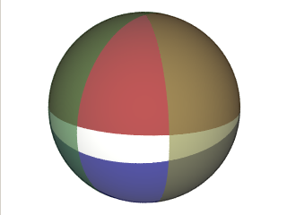

The convex polygon is made up of great circle segments of various lengths. Each great circle defines a halfspace, and they are oriented so, that they "trap" the region of interest in a fashion similar to the rectangle.
The white band is created by the intersection of four halfspaces each of which is a hemisphere. This is almost like the rectangle, but note that the horizontal extensions pinch somewhere, because the edges in this case are all great circle segments.|  |
| Figure 4. 4 halfspaces that define a polygon |
POLY J2000 310 -5 310 9 354 9 354 -5
REGION CONVEX -0.10452846326765346 -0.9945218953682734 0 0 0.14867426426863645 -0.079051508556965189 -0.98572147290147216 0 0.76604444311897812 0.64278760968653925 0 0 0.082946102778146069 -0.04410322516670262 0.99557764617523048 0
The normal form is a bit different from the specification because all vectors are normalized
using Spherical;
using Spherical.Htm;
/* .... */
namespace MySpace {
public class MyApp {
public void MyFunc(){
Region r = Pasrer.compile("POLY J2000 310 -5 310 9 354 9 354 -5");
/* ... */
}
}
}